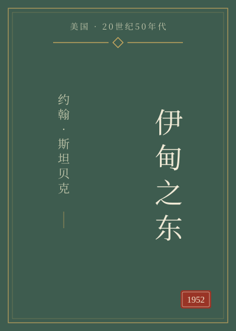
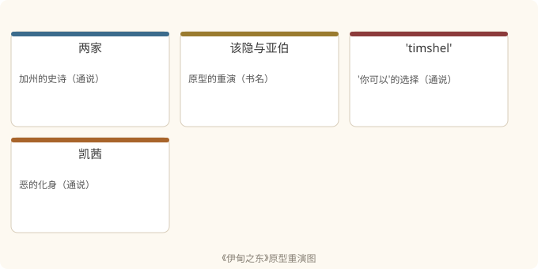

伊甸之东
一、基本信息
| 作者 | 斯坦贝克 |
|---|---|
| 成书/出版 | 1952年（作者页注记：Britannica——伊甸之东 (1952)） John Steinbeck — Encyclopaedia Britannica（百科全书） |
| 国别/地区 | 美国 |
| 时代 | 现当代 · 20世纪50年代 |
| 体裁 | 长篇小说 |
| 语言 | 英语 |

《伊甸之东》原型重演图（主题·结构图）
二、创作背景
作者页注记：伊甸之东 (1952)——'家族史诗（Britannica）'。
Britannica：斯坦贝克——1962诺奖（作者页语境——待核）。
题材（通说待核）：特拉斯克与汉密尔顿两家——该隐与亚伯的重演与'timshel'。
三、内容脉络
（通说待核）加州萨利纳斯谷的两家三代。
（通说待核）该隐-亚伯原型的重演：善与恶的选择。
四、主要人物表
| 人物 | 身份 | 说明 |
|---|---|---|
| 亚当·特拉斯克 | 农场主 | （通说待核） |
| 凯茜 | 恶的化身 | （通说待核） |
五、主题与艺术特点
- 该隐与亚伯的重演（书名语境——通说待核）。
- 'timshel'（'你可以'）：自由意志（通说待核）。
- 家族史诗与加州土地（通说待核）。
六、影响与评论
- Britannica：斯坦贝克代表作序列（作者页注记）。
John Steinbeck — Encyclopaedia Britannica（百科全书） - Britannica：1962诺奖（作者页语境——待核）。
John Steinbeck — Encyclopaedia Britannica（百科全书）
七、阅读建议
难点
- 双家族多代结构。
- 圣经原型（创世记4章）。
- 《伊甸之东》中译本（人民文学等——通说待核）。
- 英文原版。
斯坦贝克收官；与《愤怒的葡萄》对读。
八、待核实
- 亚当/凯茜人名核对（通说）。
- 1952年出版（Viking说）待核。
- 'timshel'译文细节待核。